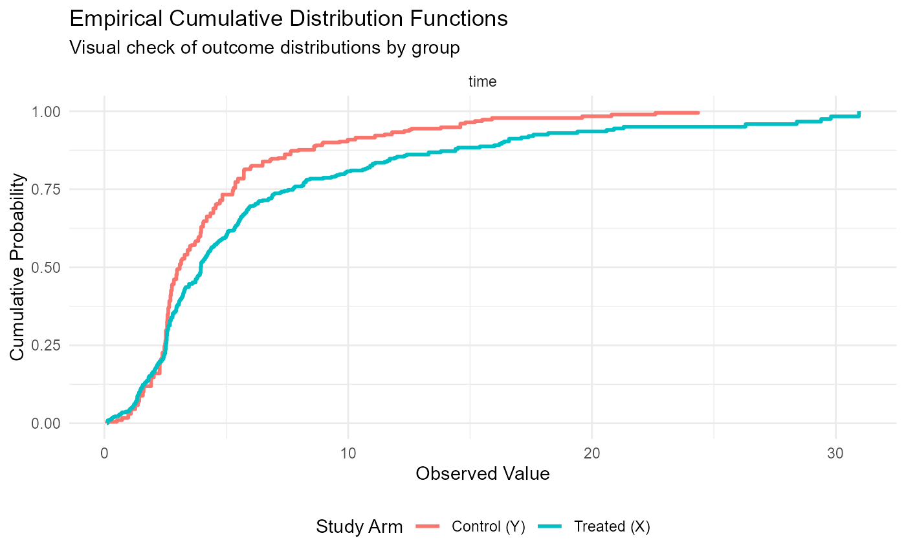
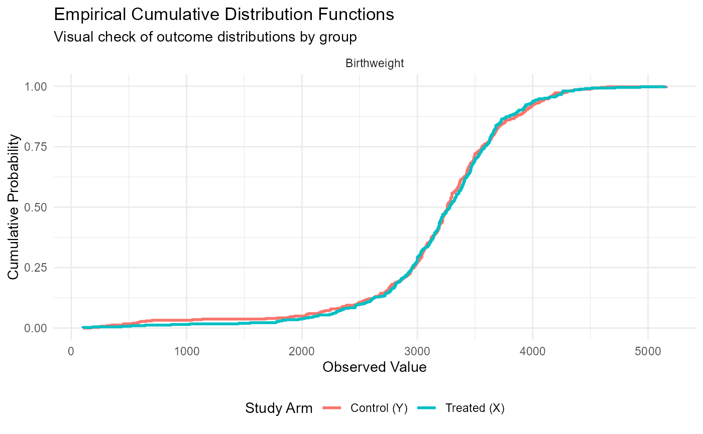
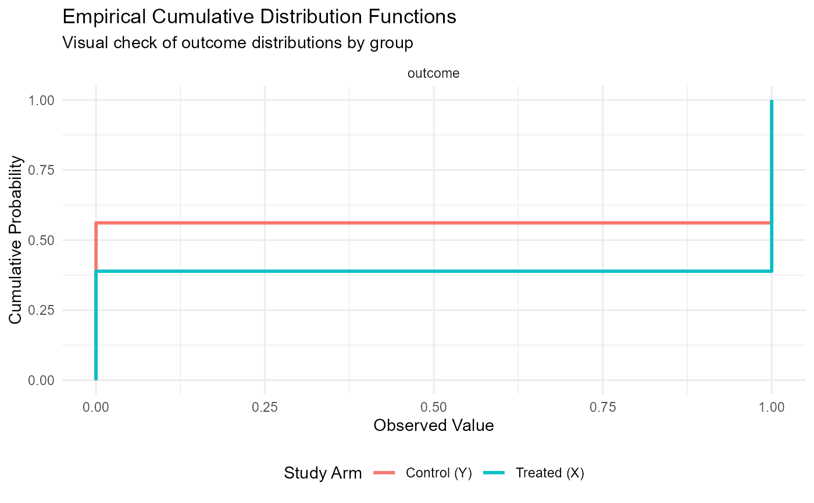

sow.RdA preprocessing utility that "sows" the analysis by parsing outcomes
(continuous or survival), partitioning data into treatment/control groups,
and pre-calculating Empirical Cumulative Distribution Functions (ECDF).
It produces a structured S3 object optimized for the harvest function.
sow(formu, data, treated = "Treated", good = "high")A formula object (e.g., Surv(time, status) + score ~ treatment).
Supports multiple outcomes on the LHS and exactly one binary grouping variable on the RHS.
A data frame containing the variables specified in formu.
A string specifying the level of the grouping variable to be
treated as the "Treated" (Group X) arm. Defaults to "Treated".
A character vector ("high" or "low") indicating
clinical favorability. Values are recycled if shorter than the number of outcomes.
An S3 object of class "sow". A nested list containing:
xid, yid: Participant IDs for Treated (X) and Control (Y) groups.
Variables: A named list for each outcome containing pre-calculated
ECDFs, weights, and GPD tail parameters if applicable.
Data Partitioning: The function assigns internal IDs (p_i_d)
to maintain the joint distribution (correlation) between multiple outcomes
for the same individual during later resampling or influence function steps.
Survival Tail Extension: If a survival curve does not reach zero
(censoring at the end), a Generalized Pareto Distribution (GPD) is used
to extend the tail via param_gpd and c_extendtail.
# ---------------------------------------------------------
# Example 1: Survival Data (Ipilimumab)
# ---------------------------------------------------------
data(ipilimumab)
# Higher time is "good" for Progression-Free Survival
sown_surv <- sow(Surv(time, event) ~ arm,
data = ipilimumab,
treated = "ipilimumab",
good = "high")
print(sown_surv)
#>
#> --- infuse: Sown Data Object ---
#> Outcomes processed: 1 (time)
#> Sample Size: 399 Treated (X), 400 Control (Y)
#> --------------------------------
#> Next step: harvest(fit)
summary(sown_surv)
#>
#> Statistical Summary of Sown Data
#> ========================================
#> Outcome Type Direction Mean_X Mean_Y N_Event_X N_Event_Y
#> time Survival high 5.729 4.275 353 372
#> ========================================
plot(sown_surv)

# ---------------------------------------------------------
# Example 2: Continuous Data (Obstetrics)
# ---------------------------------------------------------
data(obstetrics)
# High birthweight is generally considered "good"
sown_obs <- sow(Birthweight ~ Group,
data = obstetrics,
treated = "T",
good = "high")
summary(sown_obs)
#>
#> Statistical Summary of Sown Data
#> ========================================
#> Outcome Type Direction Mean_X Mean_Y N_Event_X N_Event_Y
#> Birthweight integer high 3216.67 3180.824 406 403
#> ========================================
plot(sown_obs)

# ---------------------------------------------------------
# Example 3: Longitudinal Binary Data (Respiratory)
# ---------------------------------------------------------
data(respiratory)
# We analyze status at the final visit (Visit 4)
resp_v4 <- respiratory[respiratory$visit == 4, ]
sown_resp <- sow(outcome ~ treat,
data = resp_v4,
treated = "A",
good = "high")
summary(sown_resp)
#>
#> Statistical Summary of Sown Data
#> ========================================
#> Outcome Type Direction Mean_X Mean_Y N_Event_X N_Event_Y
#> outcome integer high 0.611 0.439 54 57
#> ========================================
# Note: For binary outcomes, the plot shows a single-step ECDF
plot(sown_resp)

# ---------------------------------------------------------
# Example 4: Multiple Outcomes (Epilepsy)
# ---------------------------------------------------------
data(epilepsy)
# Looking at seizure rate at Period 4. Lower rate is "good".
epi_v4 <- epilepsy[epilepsy$period == 4, ]
sown_epi <- sow(seizure.rate ~ treatment,
data = epi_v4,
treated = "Progabide",
good = "low")
print(sown_epi)
#>
#> --- infuse: Sown Data Object ---
#> Outcomes processed: 1 (seizure.rate)
#> Sample Size: 31 Treated (X), 28 Control (Y)
#> --------------------------------
#> Next step: harvest(fit)
summary(sown_epi)
#>
#> Statistical Summary of Sown Data
#> ========================================
#> Outcome Type Direction Mean_X Mean_Y N_Event_X N_Event_Y
#> seizure.rate integer low 6.71 7.964 31 28
#> ========================================